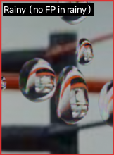
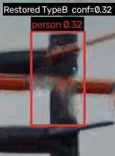
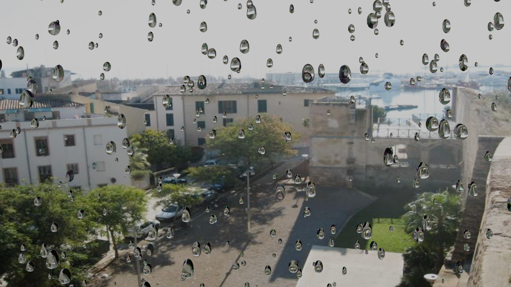

自己紹介 (About Me)
About Me
岐阜県多治見市出身。立命館大学大学院 理工学研究科 電子システム専攻、知的高性能計算研究室に所属。コンピュータビジョンと深層学習を軸に、悪天候下におけるロバストな視覚認識や画像修復、エビデンシャルディープラーニングを用いた不確実性評価に関する研究に従事しています。
Born in Tajimi, Gifu, Japan. Currently, I am a Master's student in the Intelligent High-Performance Computing Lab at Ritsumeikan University. My research focuses on computer vision and deep learning, particularly robust visual perception and image restoration in adverse weather, as well as uncertainty quantification via evidential deep learning.
研究分野 & 技術スタック (Research Interests & Skills)
Research Interests & Skills
専門分野: Computer Vision, Deep Learning, Image Restoration (Single Image Deraining, Adherent Raindrop Removal), Evidential Deep Learning, Multi-class Raindrop Semantic Segmentation.
Research Fields: Computer Vision, Deep Learning, Image Restoration (Single Image Deraining, Adherent Raindrop Removal), Evidential Deep Learning, Multi-class Raindrop Semantic Segmentation.
主な使用技術・ツール:Technical Stack:
研究ハイライト (Research Highlights)
Research Highlights
1. 高精度な雨滴除去と構造復元
1. High-Fidelity Raindrop Removal & Structure Preservation
深層学習を用いた画像復元において、CNNとTransformerを組み合わせたハイブリッドモデル（HKSF）を構築。大域的な文脈の把握と局所的な特徴抽出を両立させ、LPIPS損失を導入することで、既存手法（NAFNet等）で生じていたアーティファクトを抑制し、背景のテクスチャを自然に復元します。
We propose a hybrid model (HKSF) combining CNNs and Transformers for single image deraining. By capturing global contexts and local features simultaneously, and introducing LPIPS loss, our method suppresses artifacts common in existing methods (e.g., NAFNet) and naturally preserves background textures.
.png)
Input (Rainy)
.png)
NAFNet
.png)
Restormer
.png)
Ours
.png)
Ground Truth
2. ハルシネーションの抑制と安全性の担保 (Uncertainty Quantification)
2. Suppressing Hallucination & Ensuring Safety (Uncertainty Quantification)
従来のAIモデルは「確信度の保証」がないため、雨滴の反射光などを誤って物体として復元してしまうハルシネーション（誤検知）のリスクがあります。本研究では、復元画像に対する不確実性を算出し、後段の物体検出AIの信頼度を動的に調整することで、安全クリティカルなシステムにおける信頼性を担保します。
Conventional restoration models lack confidence guarantees, leading to severe hallucinations (e.g., restoring raindrop reflections as non-existent objects). We quantify the uncertainty of the restored image to dynamically adjust the confidence of downstream object detection AI, ensuring reliability in safety-critical systems.

入力画像 (正常)
Input Image

⚠️ 復元による誤検知 (Person)
⚠️ Hallucinated False Positive
3. Blenderを用いた物理ベースの合成雨滴生成
3. Physics-Based Synthetic Raindrop Generation via Blender
実環境下でのペアデータ（雨滴画像とクリア画像）の不足という課題を克服するため、Blenderの物理シミュレーションを活用し、光学的な屈折や反射を考慮した大規模な合成雨滴データセットを構築しています。
To overcome the scarcity of paired data (rainy and clean images) in real-world environments, we utilize Blender physical simulations to construct a large-scale synthetic dataset that accurately models optical refraction and reflection.

Daylight View
受賞歴 (Awards & Honors)
Awards & Honors
-
IEEE SMC Japan Chapter Young Researcher Award, IEEE SMC 2026 (Recipient / Tentative)
-
研究活動最優秀賞, 立命館大学 理工学部 電子情報工学科 (2026年3月)
Best Research Activity Award, Department of Electronic and Computer Engineering, Ritsumeikan University (May 2026)
🖼️ Certificate
-
Best Paper Award, The 7th International Conference on Neural Computing for Advanced Applications (NCAA 2026)
📄 Certificate (PDF)
-
Young Professionals Award, IEEE Ritsumeikan University Student Branch English Presentation Competition (Nov. 2025)
🖼️ Certificate
Publications
-
Kento Ichihara, and Lin Meng, "Spectral Entropy-Guided Evidential Learning for Real-Time Reliable Perception in Adverse Weather," In proceedings of the 2026 International Conference on Advanced Mechatronic Systems (ICAMechS 2026), Aug. 17-21, 2026 (Osaka, Japan).
-
Kento ICHIHARA and Lin Meng, "Physics-Guided Safety Gating: Balancing Structure Preservation and Raindrop Removal," The 7th International Conference on Neural Computing for Advanced Applications (NCAA 2026), July 9-12, 2026 (Osaka, Japan). [Best Paper]
-
Kento Ichihara, and Lin Meng, "From Frequency Filtering to Coherence Supervision for Raindrop Segmentation in Uncontrolled Environments," the 2026 IEEE International Conference on Systems, Man, and Cybernetics (SMC), Oct. 4-7, 2026 (Bellevue, WA, USA). (accepted)
-
Kento Ichihara, Lin Meng, "A Systematic Evaluation of Deep Learning Architectures and Training Strategies for Multi-Class Raindrop Segmentation," Proceedings of the 13th International Conference on Identification, Information and Knowledge in the Internet of Things (IIKI 2025), Dec. 18-21, 2025, Chengdu, China.
-
Kento Ichihara, Ryuto Ishibashi, and Lin Meng, "SAAFNet: Self-Adaptive Attention Fusion Network for Single Image Deraining," In proceedings of the 2025 International Conference on Advanced Mechatronic Systems (ICAMechS 2025), Sep. 19-22, 2025 (Xi'an, China).